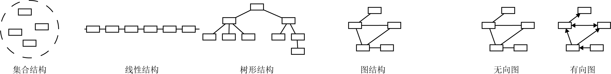
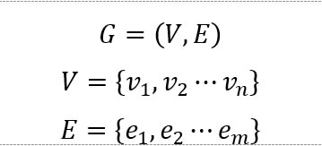
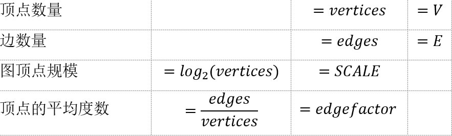
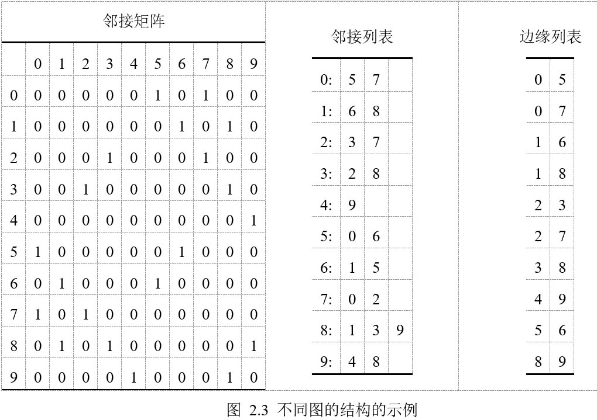
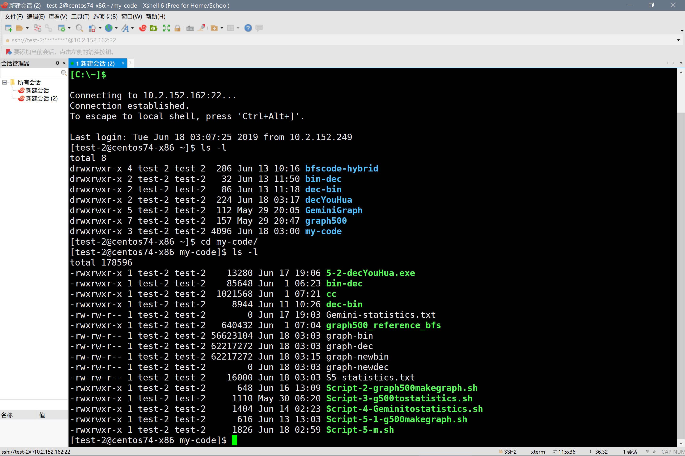
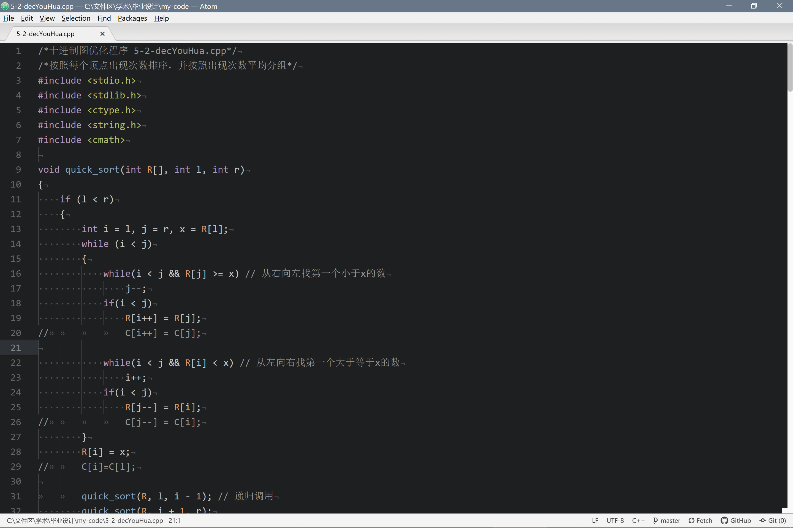
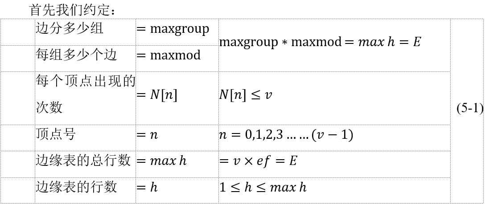
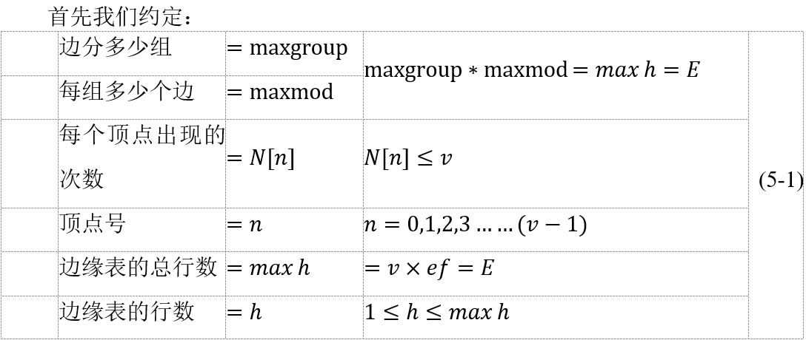

面向分布式集群的大规模图计算研究
信息工程学院 自153班
胡璟添
2019-6-19
第四章 Gemini程序分析与性能结果分析 4.1 Gemini程序图处理模型——双更新模型 4.2 分布式图形表示 4.3 任务调度 4.4 使用graph500程序执行不同图规模和度数的性能 4.5 使用GeminiGraph程序加速性能与分析 |
第一章 前 言
第一章 前 言
1.1 选题背景和研究意义

随着人类进入第四次科学技术革命，以人工智能、机器人技术、虚拟现实、大数据作、物联网技术为代表的领域迅速崛起并极大的丰富了人类的物质资料与精神生活。大数据作为研究如何从海量的信息中提取出“数据黄金”。图结构作为数据最基本的结构也是最常见的结构。在网络的飞速发展使得数据以几何的增长，对于图计算问题的复杂程度、更快的求解时间、更通用的接口等等问题提出了新的要求。
第二章 相关技术介绍
第二章 相关技术介绍
2.1 数据结构基本概念
2.1.1 数据的逻辑结构
常见数据结构有：集合结构、线性结构、树形结构、图结构。
图作为一种基本的和常见的数据结构，已经在不同学科如图论，计算机等学科中有大量研究。其中图分为有向图和无向图。无向图和有向图可以相互转化，所以在本文的研究中所有图视为无向图。
2.1.2 图的定义
其中V是顶点的集合，E是边的集合。通常用|V|、|E|表示顶点数量和边数量。但是在程序中，我们均使用V、E来表示。
其他常见图的概念上所示。
2.1.3 图的存储结构
 对于图G=(V,E)来说，可以多种表示方法，比如是邻接矩阵，和是邻接链表，这两种方法都可以表示有向图和无向图。除此之外，图的存储结构还有十字链表、邻接多重表、边集数组等。在本文中使用均使用边缘列表作为图文件的存储结构。
对于图G=(V,E)来说，可以多种表示方法，比如是邻接矩阵，和是邻接链表，这两种方法都可以表示有向图和无向图。除此之外，图的存储结构还有十字链表、邻接多重表、边集数组等。在本文中使用均使用边缘列表作为图文件的存储结构。
边缘列表是由两个一维数组构成。一个是存储顶点的信息；另一个是存储边的信息，这个边数组每个数据元素有一条边的起点下标（begin）、终点下标（end）和权（weight）组成。
2.2.2 常见图遍历的算法

1. 深度优先搜索（DFS）
深度优先搜索算法（DFS）是一种用于遍历或搜索树或图的算法。沿着树的深度遍历树的节点，尽可能深的搜索树的分支。当节点v的所在边都己被探寻过，搜索将回溯到发现节点v的那条边的起始节点。这一过程一直进行到已发现从源节点可达的所有节点为止。如果还存在未被发现的节点，则选择其中一个作为源节点并重复以上过程，整个进程反复进行直到所有节点都被访问为止。是一种盲目搜索。 深度优先搜索是图论中的经典算法，可以方便的解决很多相关的图论问题，如最大路径问题等等。
DFS时间复杂度=O(b^m )
DFS空间复杂度=O(bm)
2.2.2 常见图遍历的算法

2. 广度优先搜索（DBS）
广度优先搜索算法（BFS），又译作宽度优先搜索、横向优先搜索，是一种图形搜索算法。BFS是从根节点开始，沿着树的宽度遍历树的节点。如果所有节点均被访问，则算法中止。
BFS时间复杂度=O(|v|+|E|)=O(b^d )
BFS空间复杂度=O(|v|+|E|)=O(b^d )
2.4 常见的图计算问题
·最短路径问题：计算点到点或点到图中所有点的中最短的路径已经成本；
·树搜索问题：包括对图进行宽度优先搜索和深度优先搜索；
·图匹配问题：是确定两个图的重合相似的程度；
·图连通性问题：如判断图点v_1到v_2是否连通；
除此之外，还有其他的常见图计算问题包括：最大网络流，网络流量；计算图的最大簇等。
2.5 大规模图计算系统分类与比较


大规模分布式图计算按照物理硬件方式进行计算可有不同方式，如图 2.9所示。目前，对于海量图数据进行处理的方式主要包括集群、单节点和GPU三种，见表 2.1。但是，由于图计算中不同算法的行为差异显著，且图数据自身特性对算法执行也有较大影响，因此目前尚没有一种计算设备可以对各类图应用进行高效执行。
·基于集群的解决方案在性能方面具有充足的计算能力和存储资源，但成本昂贵，且需要高速的网络互联，并且通信规模随着集群机器数量增加而显著提高，导致可扩展性差；
·基于单机的解决方案，摒弃了网络通信带来的显著开销，但受限于图规模问题，当处理大规模图时往往采用二级存储器(HDD,SSD)等低速设备作为存储设备，I/O成为新的瓶颈，且计算资源也对性能有着明显的限制；
·目前基于加速器的方案具有很好的性能，加速器通常有很高的计算能力、带宽资源，但受限于加速器本身的资源限制，可扩展性也大大受限。
集群与单节点两个派别研究者们争论的焦点是图的存储适不适合分布式存储[19]。虽然GPU并行计算能力强大，但是GPU无法进行分支预测，所以并不适合图计算。
2.5.3 图计算特点与优化思路
大规模分布式图计算有四大特点：
·高访存计算比；
·数据局部性不好；
·结构不规则；
·受数据驱动。
为此大规模分布式图计算优化思路有以下两大思路：
·优化图的存储结构，使之易于传输和进行分布式计算；
·优化数据载入速度，或者说将数据载入时间隐藏在计算之中。
第三章 程序环境搭建
第三章 程序环境搭建
3.1 硬件环境
本论文题目是由北京石油化工学院和中国科学院计算机所高通量中心实培的毕业设计题目。通过远程登录使用了计算机所的服务器。服务器硬件参数如表 3.1所示：

3.2 软件环境
3.2.1 liunx版本
[test-2@centos74-x86 ~]$ uname -a
Linux centos74-x86 3.10.0-957.12.2.el7.x86_64 #1 SMP Tue May 14 21：24：32 UTC 2019 x86_64 x86_64 x86_64 GNU/Linux
实际的工作界面：
|  |  |
第四章 Gemini程序分析与性能结果分析
第四章 Gemini程序分析与性能结果分析
4.1 Gemini程序图处理模型——双更新模型
根据Zhu X等人研究[1]，我们处理的图文件，边要么是密集的，要么是稀疏的，由E的大小决定。 例如，CC (connected components连通分支)程序的边缘集在最初的几个迭代中是密集的，并且随着接收到更多的顶点会变得越来越稀疏。另一方面，SSSP(单源最短路径问题)从一个非常稀疏的边缘集开始，随着更多的顶点变得集，当算法接近最终收敛时，再次稀疏化。
为此，Gemini使用了与PowerGraph[8]中一样的“主体-镜像”概念：每个顶点都被分配给一个分区拥有，其中是一个主顶点，作为顶点状态数据的主副本。同一顶点的每个节点/分区上也可能有多个副本，称为镜像，它们至少拥有一个邻居。将在“主体-镜像”之间创建一对有向边，但在任何一种传播模式中只使用其中的一条边。

4.2 分布式图形表示
4.2.1 块基础分区
Gemini基于块的分区的思路来自于这样一个事实：许多大型真实世界的图通常具有自然位置，因为通常是通过数据爬虫进行收集。有关联的顶点通常存储得很近。按照顶点集划分为相邻的块可以有效地保持这种局部性。 例如，在典型的web图中，按字母排序保证了大多数边连接了两个相邻的顶点。如：在Facebook的社交网络中，大多数链接都是在地理位置附近的。

这种轻量级的基于块的分区牺牲了平衡的边缘分布或最小化的切割边缘集，但是通过(1)低开销扩展设计、(2)保留内存访问位置和(3)额外的负载平衡和任务调度优化来弥补这种不足，本文稍后将介绍这些优化。
4.3 任务调度
4.3.1 计算和通信任务的协同调度
受HPC通信库(如MPI中的AllGather)中集合操作的优化实现的启发，Gemini将集群节点组织成一个环形，消息发送和接收操作与此以平衡的循环方式协调，以减少网络拥挤并最大化聚合消息传递吞吐量。这样精心安排的通信任务与计算任务进一步仔细重叠，以隐藏网络通信成本。

第四章 Gemini程序分析与性能结果分析
4.4 使用graph500程序执行不同图规模和度数的性能

4.5 使用GeminiGraph程序加速性能与分析


对Gemini程序多次测试了性能。对每个不同的SCALE和edgefactor取平均值，生成上面两张图。 从两幅图可发现，SCALE与执行时间、edgefactor与执行时间均不成明显的关系。除了当SCALE很大，edgefactor很大时才对执行时间有较大影响。 这说明，影响分布式图计算时间是个复杂的问题，与SCALE、edgefactor有关外，还与图的存储结构、时间通信等等均有关联。
第五章 图结构优化方案与性能分析
第五章 图结构优化方案与性能分析
在上一章中，我们分析了Gemini程序在不同SCALE、edgefactor情况下的性能情况。如何继续改进，是本章的研究内容。分布式图计算加速有两大思路：方法1是改善通信，把通信时间隐藏在计算中；方法2是改善图的存储结构。 这里作为第一个步奏，首先进行的是改善图的存储结构的工作，作为一个预处理步奏。之后将预处理后的图文件输入到Gemini中，进行分布式图计算。
 
 
图实际存储情况——初始情况:由于是随机生成的，较为无序 |
|

先大后小 |

先小后大 |

按顶点顺序 |

前后交叉排序 |

第六章 总结与展望
第六章 总结与展望
文以Gemini程序为基础进行了些许研究。虽然不少学者们对于图计算问题已获得了不少研究成果，但未来还可从有很多方面可以进一步研究[15]：
6.1 融合不同计算模型的大规模分布式图计算系统
近几年，不同研究者开发了不同的图计算系统，例如的基于MapReduce模型、基于BSP模型和GAS模型的大规模分布式图计算系统，这些计系统都各有自己的优势和缺陷。如何融合各模型的优势，开发高效率、高可扩展性、高可靠性和高灵活性的整体性能更优的混合计算模型的大规模分布式图计算系统，是一个值得继续深入探讨的研究问题。
6.2 实时增量式大数据图计算系统
现有大部分大规模图计算系统是全局、批量处理的系统，且只适用于静态图结构，难以满足动态图结构的实时性要求。现实中，例如社交网络的图数据比如是时刻增长，变换的。动态图计算系统的需求会在未来越来越大。